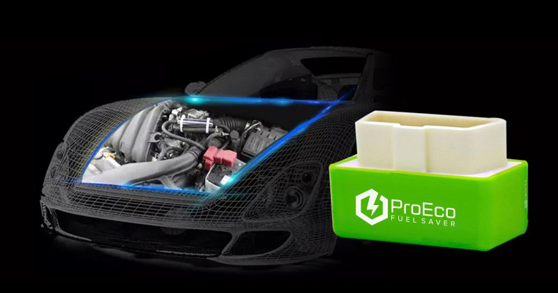
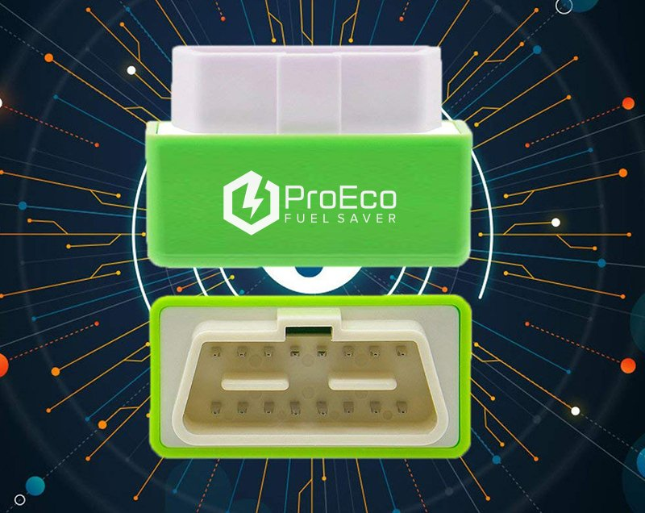
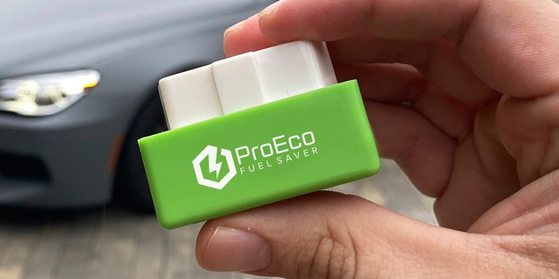
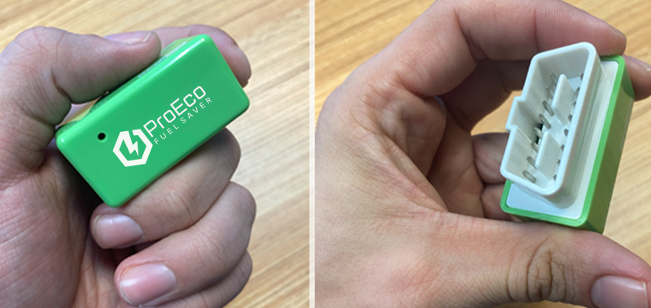

With The Cost of Gas at the Pump Rising Out of Control, People are Fighting Back With This Astounding Fuel and Money-Saving Device.
But maybe not for long, as the oil companies are trying to ban them.
Across the country, gas prices have been steadily rising to the dismay of consumers. After years of reasonable gas prices, today’s high prices are taking an uncomfortable chunk out of people’s paychecks, and leaving them with less to spend elsewhere.
Even worse, this rising price trend is not going to ease any time soon. This is not a temporary gas spike. This trend is expected to continue as long as President Biden is in office pushing his climate change plan.
Which could cause gas prices to rise to levels never seen before. Where $4, $5, even $6 or $7 a gallon is possible and maybe likely.
This is largely due to the cancelled KeyStone Pipeline by President Biden, which was going to carry oil from Alberta, Canada to Nebraska.
Cancelling the pipeline immediately hurt consumers by forever limiting crude oil imports from Canada, greatly reducing our fuel output. And unless this pipeline moves forward, there is no end to rising gas prices as demand rises, with a limited supply.
On top of that, Despite the White House's calls for OPEC and its allies to significantly ramp up production, they have only gradually increased prices, and are content to let oil prices remain elevated.
And don’t be fooled, this is a great time for oil companies, who make an even bigger fortune when prices are high. So they have no inclination to lower them. They literally have consumers over a barrel.
Consumers are in for a continued rude awakening at the pump. Which also affects the prices of everything else that requires shipping.
As prices on nearly everything we use goes up, there is some good news for angry and frustrated consumers.
Which is the release of a new, easy-to-use, fuel-saving and money-saving technology that can reduce a car's fuel consumption by 15%-35%.
ProEco Fuel Saver is a U.S. company that has launched a revolutionary and affordable fuel-saving device that helps lower a vehicle's fuel consumption, while also reduce smog-causing emissions.
In just one month of daily driving, the ProEco Fuel Saver chip can pay for itself, drastically reducing time between fill ups and costs at the pump.
Here’s How This Fuel-Saving Device Works:
The ProEco Fuel Saver is the first and only fuel-saving technology of its kind. And since its launch, it is becoming “standard equipment” for American consumers who are fed up with outrageous gas prices.
ProEco Fuel Saver is a compact, affordable, and simple-to-use tool that works with a car’s engine to lower fuel consumption. And it is amazingly effective.
That’s why this device is a huge threat for large oil companies. They have been trying to outlaw ProEco Fuel Saver from the public, and even tried to ban its use. They know this device will cut into their massive profits.
However, this device is 100% legal, and it should be no surprise that they are continually selling out on the internet.
The ProEco Fuel Saver chip can decrease a vehicle's fuel consumption by as much as 35%. Which means phenomenal savings for everyone who uses it.
The money-saving proof of ProEco Fuel Saver is evident. And climate experts know it is also a huge plus for the environment.
But interested buyers need to act before they are banned.
Large oil companies spend billions a year lobbying in Washington DC to get what they want. And they are already using a false campaign that claims it is not efficiency.
But studies prove that it does work, and that every vehicle owner would benefit by owning an ProEco Fuel Saver device.
ProEco Fuel Saver gives drivers more control over their cost of fuel.
It could not be easier to use. It simply plugs it into any car's OBD2 port located under the dashboard, beneath the steering wheel column.
All cars and trucks built and sold in the United States after January 1, 1996, have OBD2 ports. And any European vehicle made after 2001 will also have an OBD2 port.
Once it’s plugged in, the ProEco Fuel Saver immediately goes to work optimizing and reducing fuel consumption.
Can Oil Companies Really Ban This Device...
Since it has been releases to the public for use and purchase, the large oil companies have tried every legal means to stop it. As it will drastically cut into their massive profits, while Americans suffer at the pump.
With enormous war chests and thousands of lawyers and lobbyists, they have no reason to stop fighting to get this device out of the hands of consumers.
So far they have not been successful. But that doesn’t mean the situation won’t change any day. The reality is that they are so rich, they could also simply buy the company and shut it down.
However, as of right now, the ProEco Fuel Saver fuel-saving chip is still available for purchase online.
This Device is 100% Legal.
ProEco Fuel Saver is absolutely 100% legal. There is zero legal risk to own it, despite any propaganda and complaining from the big oil companies.
While they may not be happy about gas buyers turning the tables on their vast profits, there is absolutely nothing they can do to stop anyone from using it and reducing their weekly and monthly fuel cost. The ProEco Fuel Saver is literally putting money back in people’s pockets.
And it is extremely affordable.
Considering what this gas and money-saving device can do, the ProEco Fuel Saver is very affordable, selling now for under $40.
Which means it could pay for itself with just one or two tank fill ups.
People who want this technology are urged to take action quickly as the ProEco Fuel Saver has already sold out several times since going public.
How to get an ProEco Fuel Saver:
Those interested can buy directly from the company's partner website by clicking here.
NOTE: Due to recent media attention the demand for this device has increased significantly, we cannot guarantee inventory at this time.
A company spokesman says, “We cannot guarantee inventory at this time due to the demand skyrocketing right now. It's been reported a lot of people are buying multiple devices at once."
Many people are also buying several ProEco Fuel Savers at once to give to others as gifts, because it will save everybody who receives it a ton of money.
Lower Fuel Consumption and Savings at the Pump are now a reality for millions of people.
The company has announced a special discount for those who are first-time buyers of ProEco Fuel Saver. They can simply click here ProEco Fuel Saver now to take advantage of the special discount.
When it arrives, it’s simple to use. Just open the package and plug it into the vehicle's OBD2 port.
Once plugged in, the device will automatically and immediately begin to optimize the vehicle's fuel consumption and use less gas, saving more money at the pump.